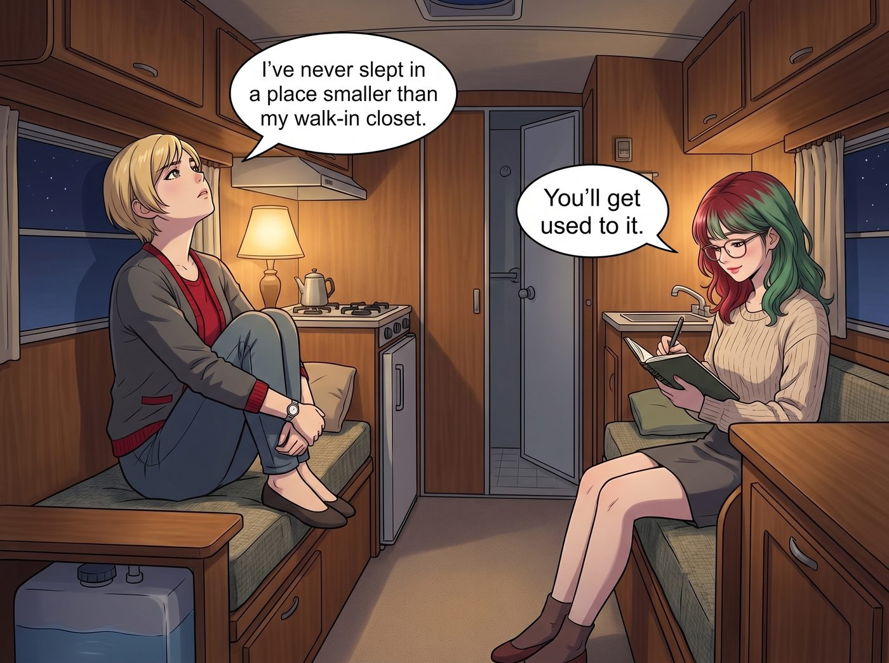
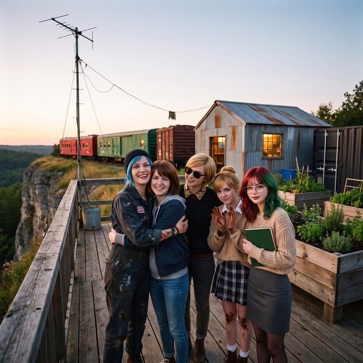
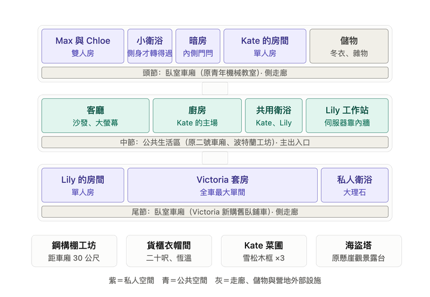

一個家的施工圖（倒敘）



懸崖邊那頓燉飯吃完的第二天早上，五個人站在營地的空地上，同時意識到了一件事：
她們沒有房子了。
在波特蘭的時候，那兩節車廂一節是工坊，一節是青年機械教室，都是白天叮叮噹噹的地方；到了晚上，四個人回珍珠區的 Loft 睡覺，Lily 回 PNCA 的宿舍。車廂從來不需要裝下一整個人生。
但現在，這片奧林匹亞半島的林地上，只有兩節退役的鐵皮車廂，一片長滿蕨類的空地，和一座看得見海的懸崖。
「所以，」Victoria 雙手抱胸，看著那兩節車廂，「我們五個人，接下來要在這兩個罐頭裡生活？」
「準確地說，是在兩個罐頭、加上一片還沒有任何建築許可的林地上生活。」Lily 推了推眼鏡，手裡已經拿著一本寫滿了待辦事項的筆記本。
Chloe 咬著一根沒點燃的菸，盯著車廂看了很久，然後咧嘴一笑：
「罐頭也行。給老娘一個月。」
「那這一個月，」Kate 小聲問，「我們住哪裡？」
答案在當天下午就開上了山：兩輛 Victoria 從西雅圖租來的露營拖車，一大一小，停在空地邊緣。
鄉下的人在自己的林地上蓋房子時，常常就是這麼住的。住得太遠，每天來回施工根本做不完；住在工地旁邊，至少醒來就能開工。
大的那輛給 Max、Chloe 和 Kate，小的那輛給 Victoria 和 Lily。拖車裡有床、一個小冰箱、一張可以變成床的餐桌，和一間小到轉身都會撞到手肘的廁所。水靠拖車自帶的水箱，每隔幾天就得開去鎮上的露營地加滿；電靠一台租來的柴油發電機，整天在空地邊轟轟作響。洗澡則要開十五分鐘的車，去鎮上那家卡車休息站投幣淋浴，五分鐘兩塊五。
吃飯在車廂外那個臨時搭起來的戶外廚房。Kate 用兩口露營瓦斯爐和一個鑄鐵鍋，每天變出三餐，雨大的時候，大家就擠在大拖車的餐桌旁，膝蓋碰著膝蓋吃。
「我這輩子，」第一晚，Victoria 坐在小拖車那張窄窄的床上，看著頭頂幾乎碰得到的天花板，「從來沒有在一個比我衣帽間還小的地方睡過覺。」
「習慣就好。」對面那張床上的 Lily 頭也不抬地翻著筆記本，「而且，這輛拖車的租金，是按月計算的。」
Victoria 沉默了兩秒，翻過身：「……那就叫那隻藍毛猴子動作快一點。」
一、三節車廂
第一個問題，是誰睡在哪裡。
原本那節做工坊用的二號車廂，被放在正中間，改成了公共的生活區。Chloe 把裡面的車床、焊機和那面被 Lily 貼滿二維碼標籤的工具牆，一件一件拆下來搬走，空出來的空間，變成了客廳、廚房、一間共用的衛浴，和角落裡 Lily 的工作站。
客廳的另一頭，留了一個角落給一座小小的燒柴爐。三節車廂平常靠熱泵空調取暖、除濕，但林子裡停電的時候，這座爐子就是全營地唯一的熱源。
「伺服器機櫃要放在離窗戶最遠、最不會被太陽直射的那一面。」Lily 拿著捲尺量來量去，「還要預留散熱的通風口。」
「知道了知道了，」Chloe 嘴裡叼著鉛筆，在一塊木板上畫線，「妳的寶貝機器人會有全車廂最好的座位。」
原本的青年機械教室車廂，接在它的前頭，改成了第一節臥室車廂：裡面隔出 Max 和 Chloe 的房間、Kate 的房間，還有一個小隔間。兩個人睡一張床，比兩張單人床省下了一塊空間，Chloe 乾脆在她們房裡塞了一間小小的淋浴廁所，窄得要側著身子才轉得過來，但總算不用每天早上跟大家搶。
而第三節車廂，是 Victoria 透過一家鐵道物資回收商買下的舊臥鋪車，要等第二週才會運上山，接在隊伍的最尾端。它被規劃成第二節臥室車廂：一間給 Lily 的小房間，和一間帶獨立衛浴的套房。
討論到這裡時，Victoria 清了清嗓子，雙手抱胸，下巴微微抬起。她已經在腦子裡排練好了一整套說詞：這節車廂是她買的，大理石是她自己掏錢裝的，她的護膚流程需要至少四十分鐘的獨立空間，以及她願意為此額外分攤多少水電費。
「關於最後那間套房，」她開口，「我認為基於出資比例和——」
「嗯，那是妳的。」Chloe 頭也沒抬，繼續在木板上畫線。
「當然是妳的呀。」Kate 點點頭。
「早就畫在圖上了。」Max 指了指平面圖上那個角落，那裡已經用鉛筆寫著「V」。
Lily 翻了一頁筆記本：「套房的排水管我已經單獨列進化糞系統的申報裡了。」
Victoria 張著嘴，那一整套準備好的說詞卡在喉嚨裡，一個字都沒派上用場。
「……妳們都不爭一下嗎？」她有點不甘心地問。
「爭什麼？」Chloe 終於抬起頭，一臉莫名其妙，「讓妳跟我們搶同一間浴室，每天早上排隊排到天荒地老？那才是全營地的災難好嗎。」
Victoria 噎了一下，悻悻地把手放了下來。
那是她第一次發現，在這個地方，她的錢有時候根本派不上用場。因為大家早就把她需要的東西，算進去了。
Max 和 Chloe 那間房的隔壁，原本規劃成儲藏室的小隔間，被 Max 用黑色遮光布和一盞紅色安全燈，改成了她的暗房。Chloe 幫她接好了水槽和排水管，在門內側裝了一個能從裡面隨時打開的門閂。
「這樣妳隨時都能推門出來。」Chloe 拍了拍那個門閂，沒有多說什麼。
Max 看著她，也沒有說話，只是在那天晚上，多抱了她一會兒。
至於這三節車廂的名字，後來誰也沒有特地去改。不管是客廳、臥室還是暗房，大家都習慣把這整個地方叫作「二號車廂」。
二、營地
第二個問題，是那些住不進車廂的東西。
Chloe 的重工業工坊，第一個被趕了出來。電焊的火花、角磨機的噪音和機油味，誰也不想在吃飯睡覺的地方聞到。於是她在離車廂三十公尺遠的地方，用回收的鋼樑和波浪板，自己搭了一座半開放的鋼構棚。車床、焊機、工具牆，全部搬了進去。那台申請了防震豁免的車床，被她用地腳螺栓鎖死在一塊新澆的水泥基座上。
棚子被她分成了兩半。靠林道的那一半空著，是車位區，猛禽可以整台開進去，地上擺著千斤頂和輪擋；另一半是金工區，車床、焊機和那面工具牆都在這裡。汽油和機油不准放在棚裡，全部收進棚外一個上了鎖的鐵櫃，離角磨機的火花遠遠的。
當然，天氣好、只是換個濾芯或火星塞這種小活的時候，她多半還是懶得把車開進去，直接在車廂外的空地上躺下來，鑽進車底就修。
中間那節車廂的後門外，還有一個 Chloe 用剩下的波浪板和舊木板拼出來的小角落：一張報廢車上拆下來的皮椅，一個咖啡罐菸灰缸。車廂裡經過全家三比一表決不准點火，這裡是她唯一能合法抽菸的地方。
「這是全營地唯一一個，老娘說了算的地方。」她站在棚子門口，得意地宣布。
Victoria 的東西，是第二個被趕出來的。
她從西雅圖運來了整整一卡車的箱子：衣服、包包、鞋子、配件，每一件都裝在防塵袋裡。三節車廂再怎麼擠，也塞不下這些。
最後的解決辦法，是一個二十呎長的舊海運貨櫃。Victoria 花錢請人在裡面裝了除濕機、恆溫空調、層架和一整面穿衣鏡，把它改成了一座獨立的衣帽間。貨櫃外面被 Chloe 噴了一層消光黑漆，看起來像一個隨時準備出任務的軍火庫，裡面卻掛滿了真絲和羊絨。
「妳在一個連自來水都還沒接上的林子裡，」Max 站在貨櫃門口，看著裡面整整齊齊的鞋架，「先蓋了一個恆溫衣帽間。」
「優先順序，Maxine。」Victoria 頭也不回地掛好一件大衣，「妳們可以沒有熱水，但我的克什米爾不能發霉。」
Kate 的東西最少，只有幾箱書和一個裝滿種子的鐵盒。
她挑了車廂南側一塊陽光最好的空地，用 Chloe 從廢料堆裡翻出來的雪松木板，圍出三個方方正正的高床。她在裡面種了迷迭香、薄荷、羅勒，還有一小排不知道能不能在這種天氣活下來的番茄苗。
「這裡會變成一個花園的。」她跪在泥地上，手上全是土，笑得很開心，「等夏天到了，我們就不用每次都去鎮上買香草了。」
三、許可
而這一切能夠存在的前提，是 Lily 那本越寫越厚的筆記本。
這片林地雖然是 Victoria 的家族信託名下的私人土地，但在郡政府的分區規劃裡，它是一塊沒有任何住宅登記的鄉村林地。要讓五個人合法地住在這裡，光是想到的東西就已經寫滿了好幾頁：臨時建築的報備、化糞系統的設計和審查、水井的許可、用電的安全檢查。
那個月，Lily 往返郡政府的規劃辦公室七次。她沒有偽造任何東西，也沒有找任何人的把柄。她只是把每一張表格都填得一絲不苟，把每一份圖紙都附上了 Chloe 手繪、再由她重新描成標準格式的版本，然後坐在承辦人的辦公桌前，安靜地等對方一頁一頁地看完。
「那個承辦人說，」某天晚上，Lily 端著熱牛奶，難得帶著一點困惑地說，「他做了二十年，第一次看到有人把化糞池的申請書附上目錄和頁碼。」
「那是在誇妳嗎？」Chloe 問。
「我不確定。」Lily 想了想，「但他當天就蓋章了。」
至於水電，這片林子什麼都沒有。
Victoria 打電話問過地方電力公司，把電網延伸到這裡要多少錢。對方報的數字和工期，跟電信公司那通電話差不多。她又一次默默地掛斷了。
所以營地走的是離網的路：車廂南側的空地上，架起一排普通的住家用太陽能板，白天充進一個電池櫃，晚上慢慢放；西北部的冬天陰雨連綿，太陽能一整週發不了多少電的時候，就靠一台買來的柴油發電機頂上。
水則是鑽出來的。一口新井，一台抽水馬達，一個壓力水箱，水樣送去檢驗合格之後，三節車廂的水龍頭才第一次流出能喝的水。熱水靠一台接著丙烷桶的即熱式熱水器，丙烷桶就放在營地邊上，每隔一陣子有車上山來補。車廂和鋼構棚的屋簷底下，還接了幾個集雨桶，專門給 Kate 的菜圃澆水。
這套東西簡陋、吵鬧，而且永遠有某個零件需要 Chloe 去修。但它是她們自己的。
四、第一張全家福
一個月後，Chloe 履行了她的承諾。
那天早上，兩輛露營拖車被拖回了西雅圖。Victoria 站在路邊目送它們離開，臉上的表情，像是在送別兩個她這輩子再也不想見到的前任。
三節車廂裡有了床、廚房和熱水；三十公尺外的鋼構棚裡，車床第一次在新家轉動起來；黑色的貨櫃裡，Victoria 的大衣安然無恙；Kate 的高床裡，迷迭香和薄荷都活了下來，只有番茄苗還在跟奧林匹亞半島的雨季僵持。
那天傍晚，Max 把三腳架架在懸崖邊的觀景台上，喊大家過來。
那時候，它還只是一塊用回收木板鋪成的露台，第一晚大家就是在這裡吃燉飯的。露台邊上，還立著 Chloe 搬來第一週豎起的那根天線桿。很久以後，Chloe 才會以那根鐵桿為骨架，在它上面一層一層地往上加蓋，裝上一部吱吱作響的改裝電梯，把它變成那座後來被大家叫作「海盜塔」的瞭望台。
五個人擠在鏡頭前。背景是三節車廂、一座鋼構棚、一個黑色貨櫃和三個長滿香草的木框。Chloe 渾身機油，Victoria 戴著墨鏡，Kate 手上還沾著土，Lily 抱著她那本筆記本，Max 按下自拍定時，跑回來擠進 Chloe 的懷裡。
「喀嚓。」
這是她們在這片林地上，拍的第一張全家福。
照片吐出來的時候，Kate 湊過去看了一眼，輕聲說：
「看起來，像一個家了。」
沒有人反駁她。